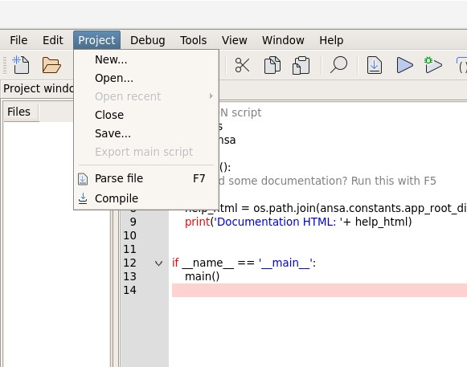
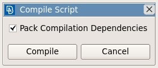

Obfuscating (Compiling) an Application#
Introduction#
Python is an interpreted programming language. This means that the source code is not compiled. The interpreter reads and executes the instructions directly. Thus the source code is always exposed into a human readable format. In order to make proprietary code secret, the python source code needs to be obfuscated (compiled) in order to be machine readable only.
Cryptographic technologies are available to app developers in order to make the final product into a binary (obfuscated) format.
Obfuscation process#
In order to obfuscate an application the developer will have to read the script in ANSA’s or META’s script editor. In the ‘Project’ menu the “Compile” option will output a binary file with the .pyb extension.

When pressing the “Compile” button, an extra option will appear, prompting the user to choose whether the compiled file will ‘Pack Compilation Dependencies’ or not.

If the user unchecks the checkbox, then the compilation process will not take into consideration the dependencies to any other modules and the produced “.pyb” file will only include the code of the main file.
On the other hand, if the user checks the checkbox, then a monolithic “.pyb” file will be produced, which will include both the source code of the main module and the code of any other custom module that has been imported.
Note
In order for all the dependencies to be taken into consideration, the modules have to be imported by using
the ansa.ImportCode() function. Using the native “import” statement does not guarantee that the final
“.pyb” file will work as expected.
An example can be seen below:
import ansa
import sys
import numpy
ansa.ImportCode('my_path/my_module.py')
ansa.ImportCode('my_path/my_library.py')
from my_library import shell_normal_vector
def foo():
pass
In the above example, the ansa, sys and numpy libraries will not be included in the compiled file, as they are external dependencies to the app. However, the ‘my_module’ and the ‘my_library’ modules will be imported in the final binary file, if the user has selected the ‘Pack Compilation Dependencies’ option.
Note
The obfuscation of a script can also be done in batch mode by using the ansa.CompileScript() function.
Warning
The obfuscation mechanism is developed by BETA CAE Systems. It should not be confused with the byte code files (.pyc) that the Python interpreter automatically generates.